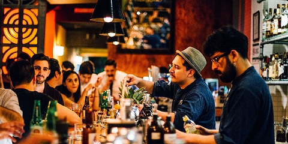
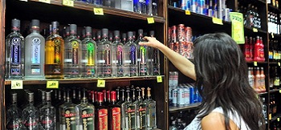
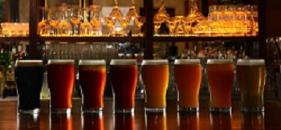

En diciembre de 2018, en una juntada entre 5 amigos empendedores, surgió una idea. No era la idea de empezar un negocio, sino la idea hacer algo bueno, algo que a la gente realmente le guste, y que a nosotros nos emocione. Así surgió WeDrink.
Tan solo 6 meses después de esa juntada, en mayo del 2019, WeDrink abrió las puertas de su bar al público. La consigna era una sola: que cada noche, la gente se vaya con ganas de volver.
 El objetivo se alcanzó, y se seguía alcanzando día a día, pero no estábamos satisfechos. Llegamos a un punto en el que ya no era suficiente para nosotros que la gente tenga una experiencia de disfrute en nuestro bar, y así fue que decidimos expandirnos y abrir una sección de licorería, para que la gente pueda llevarse un poco de esta experiencia única a su hogar.
>Hoy nuestra familia comprende 28 personas, y nuestros amigos se calculan en miles y miles todos los meses. Aun así, no estamos satisfechos, porque creemos que siempre podemos mejorar. Mejorar para nuestra familia, y mejorar para nuestros amigos, y no vamos a parar…
